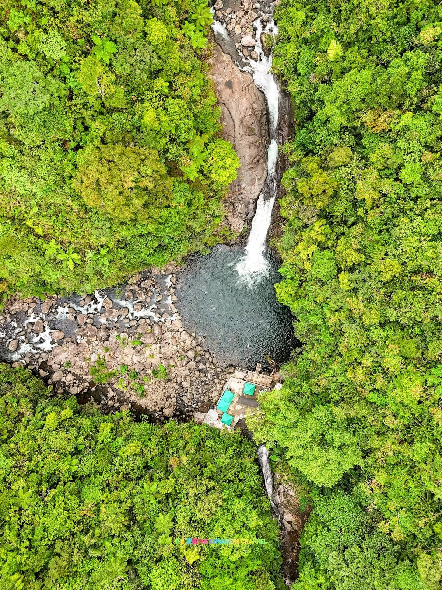
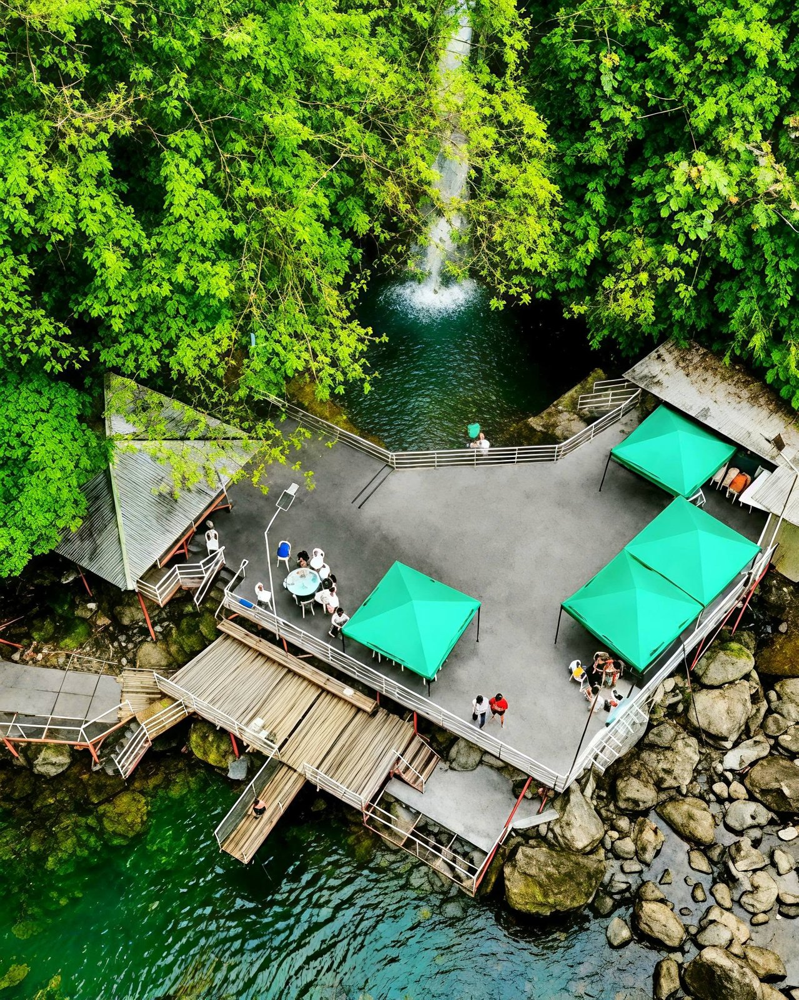
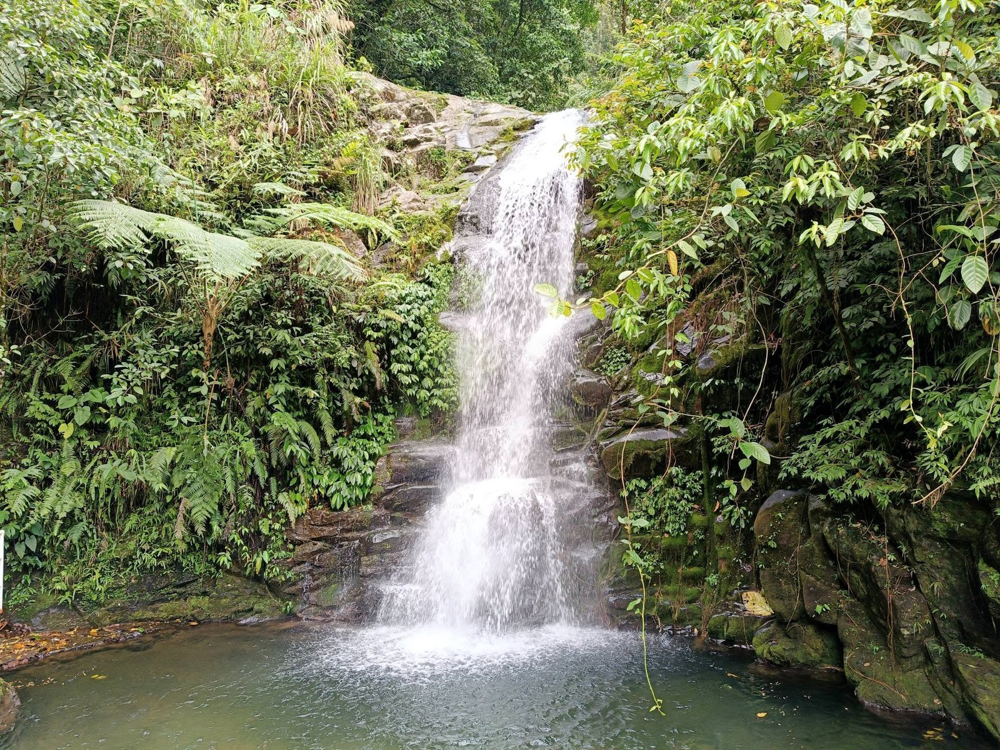
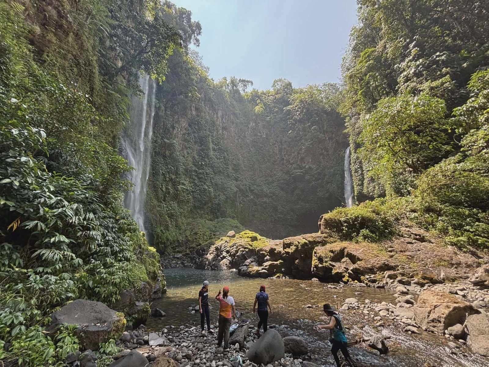

Kibolag Falls
₱200 entry includes free falls access & free ride



About Kibolag Falls
Kibolag Falls at Villa Cascadia along Route 955, Claveria, Misamis Oriental — the ₱200 fee already covers falls access and the ride up to the entrance.
Location
Directions on Google Maps
Explore the area
Villa Cascadia, Route 955, Claveria, Misamis Oriental
Pan or zoom to explore. Use Google Maps for turn-by-turn directions. Map data © OpenStreetMap contributors.
More waterfalls in Claveria
 2 photos
2 photosMailig Falls
Free-entry falls in Malagana Malagana, Claveria, Misamis Oriental 3 photos
3 photosLantawon Falls
The falls inside ApoVista Forest Park ApoVista Forest Park and Campsite, Aposkahoy, Claveria, Misamis Oriental
Temporarily closed